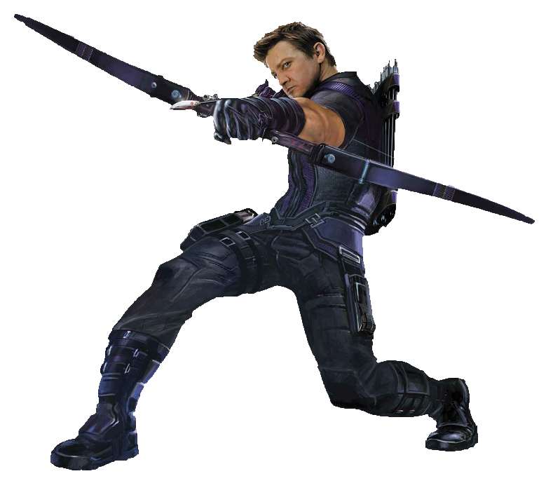

Hawkeye
Clint Barton, aka Hawkeye, is a highly skilled marksman and former S.H.I.E.L.D. agent. Known for his exceptional archery skills, he operates as a grounded yet vital member of the Avengers. Unlike many of his superpowered teammates, Clint relies on strategy, precision, and his unwavering sense of duty. He is a devoted family man, often torn between his responsibilities as a hero and his commitment to his wife and children.
Abilities
Hawkeye is a master archer with near-superhuman accuracy, capable of hitting moving targets even without looking. He is highly trained in hand-to-hand combat, espionage, and tactical strategy, making him an invaluable asset in battle. His custom trick arrows, including explosive, grapple, and hacking arrows, allow him to adapt to various combat situations. Years of fieldwork have given him exceptional agility, reflexes, and endurance, allowing him to hold his own against superpowered foes.
Backstory
Clint Barton was recruited into S.H.I.E.L.D. at a young age, where he honed his skills as a top agent. As threats beyond human capability emerged, Barton was selected to be part of an elite response unit that would later be known as the Avengers. Over time, he became more than just a soldier, he was a mentor, a protector, and one of the few who could remind his teammates of what they were fighting for. Even in the face of overwhelming odds, Hawkeye stood his ground, proving that heroism isn’t defined by powers but by determination and heart.